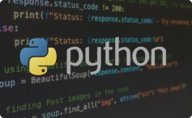

Самоучитель Python

Онлайн-тренажер Python 3 для начинающих
Теория без воды. Задачи с автоматической проверкой. Подсказки на русском языке. Работает в любом современном браузере.
начать бесплатноСамоучитель Python 3, собранный из материалов данного сайта. Предназначен в основном для тех, кто хочет изучить язык программирования Python с нуля.
-
Тема 1: Введение в Python
-
Тема 2: Основы программирования на Python
-
Тема 3: Управляющие конструкции
-
Тема 4: Структуры данных
-
Тема 5: Функции и модули
-
Тема 6: Обработка исключений
-
Тема 7: Работа с файлами и потоками
-
Тема 8: файловая система
-
Тема 9: Объектно-ориентированное программирование (ООП)
-
Тема 10: Регулярные выражения
-
Тема 11: Дополнительные темы
категории
ТЕОРИЯ
-
Введение в Python
-
Основы программирования на Python
-
Управляющие конструкции
-
Структуры данных
-
Функции и модули
-
Обработка исключений
-
Работа с файлами и потоками
-
файловая система
-
Объектно-ориентированное программирование (ООП)
-
Регулярные выражения
-
Дополнительные темы